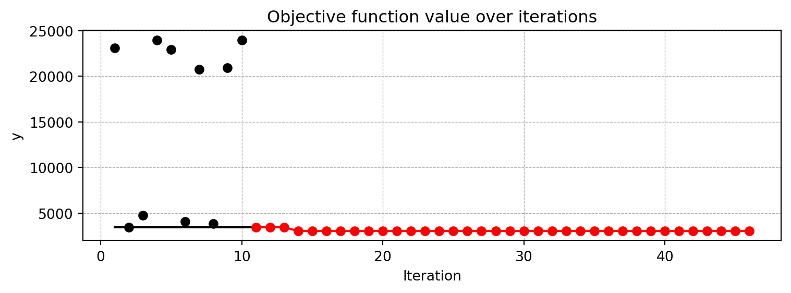
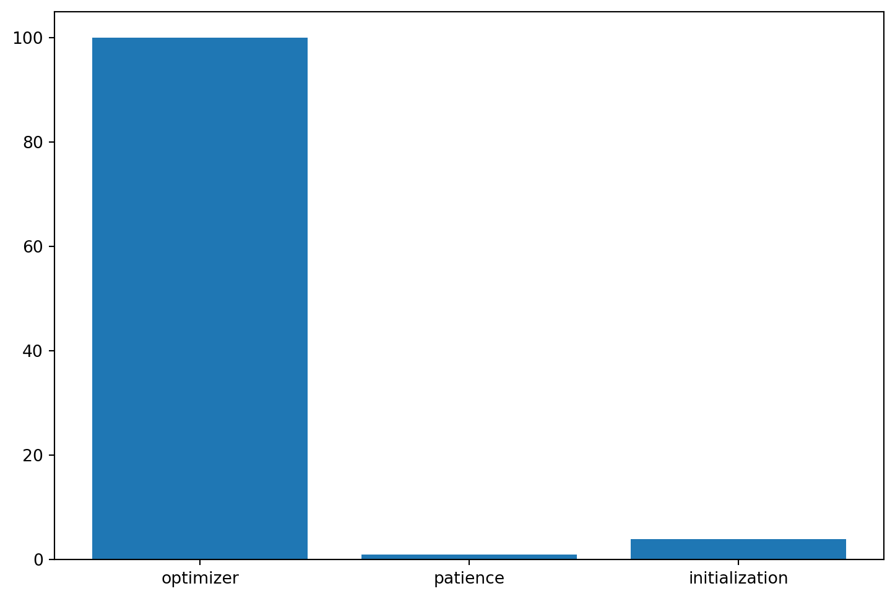
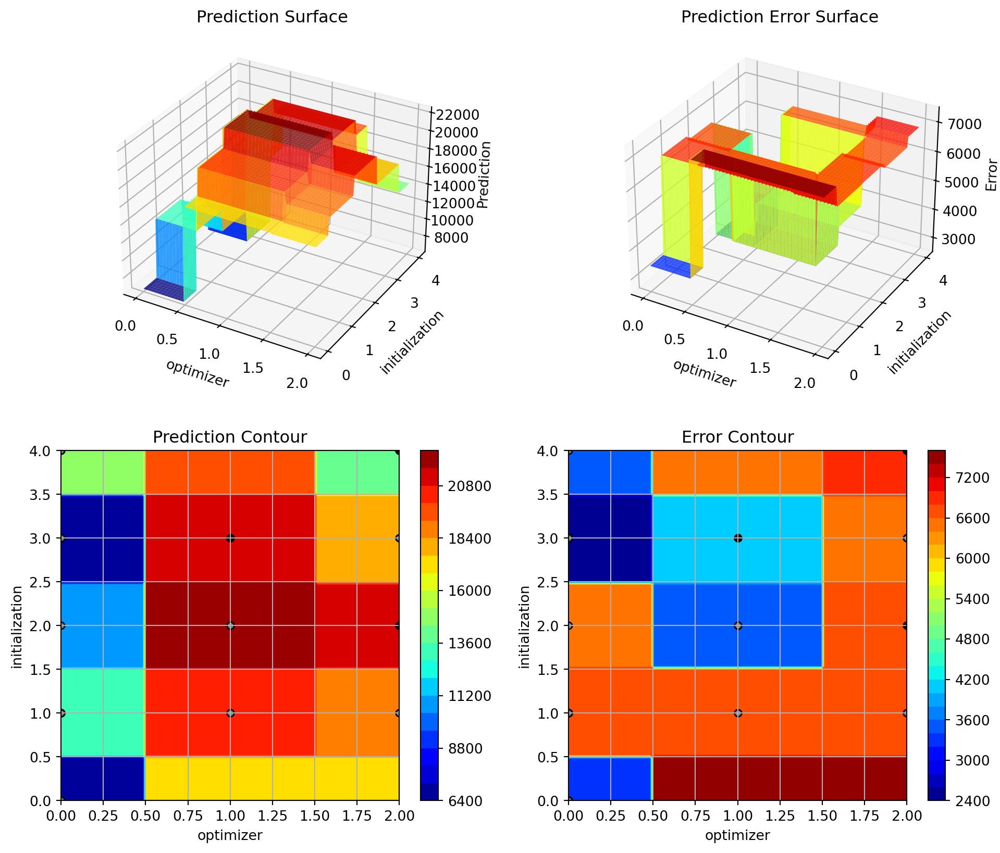
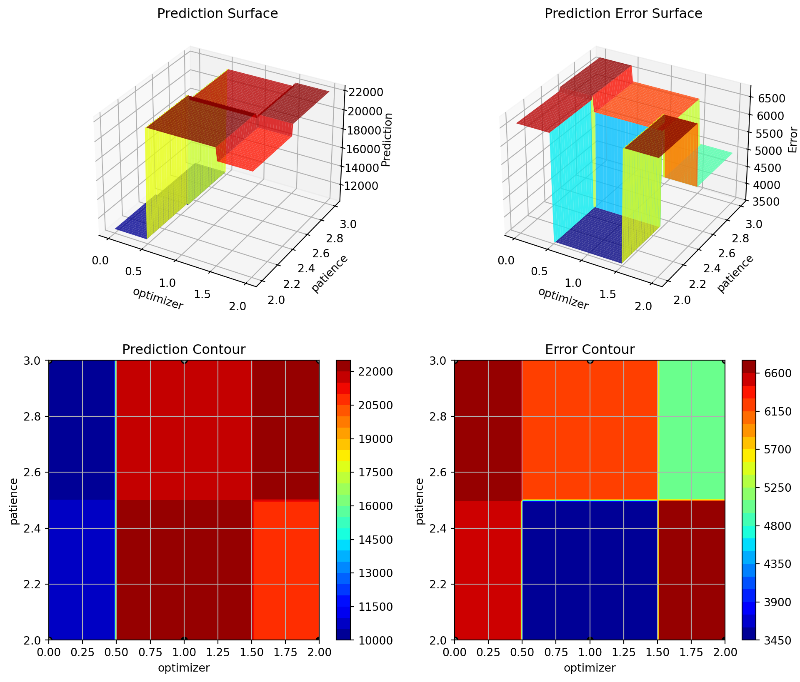

import os
from math import inf
import warnings
warnings.filterwarnings("ignore")26 Hyperparameter Tuning with spotpython and PyTorch Lightning for the Diabetes Data Set
In this section, we will show how spotpython can be integrated into the PyTorch Lightning training workflow for a regression task. It demonstrates how easy it is to use spotpython to tune hyperparameters for a PyTorch Lightning model.
26.1 The Basic Setting
After importing the necessary libraries, the fun_control dictionary is set up via the fun_control_init function. The fun_control dictionary contains
PREFIX: a unique identifier for the experimentfun_evals: the number of function evaluationsmax_time: the maximum run time in minutesdata_set: the data set. Here we use theDiabetesdata set that is provided byspotpython.core_model_name: the class name of the neural network model. This neural network model is provided byspotpython.hyperdict: the hyperparameter dictionary. This dictionary is used to define the hyperparameters of the neural network model. It is also provided byspotpython._L_in: the number of input features. Since theDiabetesdata set has 10 features,_L_inis set to 10._L_out: the number of output features. Since we want to predict a single value,_L_outis set to 1.
The HyperLight class is used to define the objective function fun. It connects the PyTorch and the spotpython methods and is provided by spotpython.
from spotpython.data.diabetes import Diabetes
from spotpython.hyperdict.light_hyper_dict import LightHyperDict
from spotpython.fun.hyperlight import HyperLight
from spotpython.utils.init import (fun_control_init, surrogate_control_init, design_control_init)
from spotpython.utils.eda import gen_design_table
from spotpython.spot import spot
from spotpython.utils.file import get_experiment_filename
PREFIX="601"
data_set = Diabetes()
fun_control = fun_control_init(
PREFIX=PREFIX,
save_experiment=True,
fun_evals=inf,
max_time=1,
data_set = data_set,
core_model_name="light.regression.NNLinearRegressor",
hyperdict=LightHyperDict,
_L_in=10,
_L_out=1)
fun = HyperLight().funmodule_name: light
submodule_name: regression
model_name: NNLinearRegressorThe method set_hyperparameter allows the user to modify default hyperparameter settings. Here we modify some hyperparameters to keep the model small and to decrease the tuning time.
from spotpython.hyperparameters.values import set_hyperparameter
set_hyperparameter(fun_control, "optimizer", [ "Adadelta", "Adam", "Adamax"])
set_hyperparameter(fun_control, "l1", [3,4])
set_hyperparameter(fun_control, "epochs", [3,7])
set_hyperparameter(fun_control, "batch_size", [4,11])
set_hyperparameter(fun_control, "dropout_prob", [0.0, 0.025])
set_hyperparameter(fun_control, "patience", [2,3])
design_control = design_control_init(init_size=10)
print(gen_design_table(fun_control))| name | type | default | lower | upper | transform |
|----------------|--------|-----------|---------|---------|-----------------------|
| l1 | int | 3 | 3 | 4 | transform_power_2_int |
| epochs | int | 4 | 3 | 7 | transform_power_2_int |
| batch_size | int | 4 | 4 | 11 | transform_power_2_int |
| act_fn | factor | ReLU | 0 | 5 | None |
| optimizer | factor | SGD | 0 | 2 | None |
| dropout_prob | float | 0.01 | 0 | 0.025 | None |
| lr_mult | float | 1.0 | 0.1 | 10 | None |
| patience | int | 2 | 2 | 3 | transform_power_2_int |
| batch_norm | factor | 0 | 0 | 1 | None |
| initialization | factor | Default | 0 | 4 | None |Finally, a Spot object is created. Calling the method run() starts the hyperparameter tuning process.
spot_tuner = spot.Spot(fun=fun,fun_control=fun_control, design_control=design_control)
res = spot_tuner.run()train_model result: {'val_loss': 23995.974609375, 'hp_metric': 23995.974609375}train_model result: {'val_loss': 23983.41015625, 'hp_metric': 23983.41015625}train_model result: {'val_loss': 23741.552734375, 'hp_metric': 23741.552734375}train_model result: {'val_loss': 24071.35546875, 'hp_metric': 24071.35546875}train_model result: {'val_loss': 23949.021484375, 'hp_metric': 23949.021484375}train_model result: {'val_loss': 24050.935546875, 'hp_metric': 24050.935546875}train_model result: {'val_loss': 23958.79296875, 'hp_metric': 23958.79296875}train_model result: {'val_loss': 24145.1328125, 'hp_metric': 24145.1328125}train_model result: {'val_loss': 23706.568359375, 'hp_metric': 23706.568359375}train_model result: {'val_loss': 24065.36328125, 'hp_metric': 24065.36328125}
train_model result: {'val_loss': 23994.953125, 'hp_metric': 23994.953125}
spotpython tuning: 23706.568359375 [----------] 1.69% train_model result: {'val_loss': 23769.50390625, 'hp_metric': 23769.50390625}
spotpython tuning: 23706.568359375 [----------] 4.12% train_model result: {'val_loss': 23939.123046875, 'hp_metric': 23939.123046875}
spotpython tuning: 23706.568359375 [#---------] 5.90% train_model result: {'val_loss': 23275.673828125, 'hp_metric': 23275.673828125}
spotpython tuning: 23275.673828125 [#---------] 8.92% train_model result: {'val_loss': 23818.576171875, 'hp_metric': 23818.576171875}
spotpython tuning: 23275.673828125 [#---------] 11.19% train_model result: {'val_loss': 23994.216796875, 'hp_metric': 23994.216796875}
spotpython tuning: 23275.673828125 [#---------] 12.24% train_model result: {'val_loss': 23915.45703125, 'hp_metric': 23915.45703125}
spotpython tuning: 23275.673828125 [#---------] 13.24% train_model result: {'val_loss': 22211.830078125, 'hp_metric': 22211.830078125}
spotpython tuning: 22211.830078125 [##--------] 19.32% train_model result: {'val_loss': 23558.4296875, 'hp_metric': 23558.4296875}
spotpython tuning: 22211.830078125 [###-------] 26.63% train_model result: {'val_loss': 23892.326171875, 'hp_metric': 23892.326171875}
spotpython tuning: 22211.830078125 [###-------] 29.57% train_model result: {'val_loss': 23439.353515625, 'hp_metric': 23439.353515625}
spotpython tuning: 22211.830078125 [####------] 35.58% train_model result: {'val_loss': 23541.736328125, 'hp_metric': 23541.736328125}
spotpython tuning: 22211.830078125 [####------] 40.12% train_model result: {'val_loss': 23998.673828125, 'hp_metric': 23998.673828125}
spotpython tuning: 22211.830078125 [####------] 41.76% train_model result: {'val_loss': 23799.5703125, 'hp_metric': 23799.5703125}
spotpython tuning: 22211.830078125 [####------] 43.92% train_model result: {'val_loss': 23228.322265625, 'hp_metric': 23228.322265625}
spotpython tuning: 22211.830078125 [#####-----] 49.89% train_model result: {'val_loss': nan, 'hp_metric': nan}train_model result: {'val_loss': 22521.150390625, 'hp_metric': 22521.150390625}
spotpython tuning: 22211.830078125 [#####-----] 53.70% train_model result: {'val_loss': 23720.818359375, 'hp_metric': 23720.818359375}
spotpython tuning: 22211.830078125 [######----] 57.71% train_model result: {'val_loss': 23989.302734375, 'hp_metric': 23989.302734375}
spotpython tuning: 22211.830078125 [######----] 61.17% train_model result: {'val_loss': 23949.74609375, 'hp_metric': 23949.74609375}
spotpython tuning: 22211.830078125 [######----] 64.10% train_model result: {'val_loss': 22723.22265625, 'hp_metric': 22723.22265625}
spotpython tuning: 22211.830078125 [#######---] 68.09% train_model result: {'val_loss': 23123.189453125, 'hp_metric': 23123.189453125}
spotpython tuning: 22211.830078125 [#######---] 73.10% train_model result: {'val_loss': 22926.396484375, 'hp_metric': 22926.396484375}
spotpython tuning: 22211.830078125 [########--] 81.81% train_model result: {'val_loss': 23765.197265625, 'hp_metric': 23765.197265625}
spotpython tuning: 22211.830078125 [#########-] 86.10% train_model result: {'val_loss': 24087.462890625, 'hp_metric': 24087.462890625}
spotpython tuning: 22211.830078125 [#########-] 87.81% train_model result: {'val_loss': 22675.02734375, 'hp_metric': 22675.02734375}
spotpython tuning: 22211.830078125 [#########-] 91.38% train_model result: {'val_loss': 13072.373046875, 'hp_metric': 13072.373046875}
spotpython tuning: 13072.373046875 [##########] 97.29% train_model result: {'val_loss': 21290.43359375, 'hp_metric': 21290.43359375}
spotpython tuning: 13072.373046875 [##########] 100.00% Done...
Experiment saved to spot_601_experiment.pickle26.2 Looking at the Results
26.2.1 Tuning Progress
After the hyperparameter tuning run is finished, the progress of the hyperparameter tuning can be visualized with spotpython’s method plot_progress. The black points represent the performace values (score or metric) of hyperparameter configurations from the initial design, whereas the red points represents the hyperparameter configurations found by the surrogate model based optimization.
spot_tuner.plot_progress()
26.2.2 Tuned Hyperparameters and Their Importance
Results can be printed in tabular form.
from spotpython.utils.eda import gen_design_table
print(gen_design_table(fun_control=fun_control, spot=spot_tuner))| name | type | default | lower | upper | tuned | transform | importance | stars |
|----------------|--------|-----------|---------|---------|----------------------|-----------------------|--------------|---------|
| l1 | int | 3 | 3.0 | 4.0 | 3.0 | transform_power_2_int | 100.00 | *** |
| epochs | int | 4 | 3.0 | 7.0 | 3.0 | transform_power_2_int | 0.07 | |
| batch_size | int | 4 | 4.0 | 11.0 | 4.0 | transform_power_2_int | 17.79 | * |
| act_fn | factor | ReLU | 0.0 | 5.0 | ELU | None | 1.86 | * |
| optimizer | factor | SGD | 0.0 | 2.0 | Adadelta | None | 2.10 | * |
| dropout_prob | float | 0.01 | 0.0 | 0.025 | 0.016713658230795965 | None | 0.07 | |
| lr_mult | float | 1.0 | 0.1 | 10.0 | 8.673638312631597 | None | 1.06 | * |
| patience | int | 2 | 2.0 | 3.0 | 3.0 | transform_power_2_int | 0.07 | |
| batch_norm | factor | 0 | 0.0 | 1.0 | 0 | None | 0.07 | |
| initialization | factor | Default | 0.0 | 4.0 | kaiming_uniform | None | 0.66 | . |A histogram can be used to visualize the most important hyperparameters.
spot_tuner.plot_importance(threshold=1.0)
spot_tuner.plot_important_hyperparameter_contour(max_imp=3)l1: 100.00000000000001
epochs: 0.06799379967706867
batch_size: 17.79445221136415
act_fn: 1.8555985391477465
optimizer: 2.1034211355552452
dropout_prob: 0.06799379967706867
lr_mult: 1.0617108609169053
patience: 0.06799379967706867
batch_norm: 0.06799379967706867
initialization: 0.6584540382019533


26.2.3 Get the Tuned Architecture
import pprint
from spotpython.hyperparameters.values import get_tuned_architecture
config = get_tuned_architecture(spot_tuner, fun_control)
pprint.pprint(config){'act_fn': ELU(),
'batch_norm': False,
'batch_size': 16,
'dropout_prob': 0.016713658230795965,
'epochs': 8,
'initialization': 'kaiming_uniform',
'l1': 8,
'lr_mult': 8.673638312631597,
'optimizer': 'Adadelta',
'patience': 8}26.2.4 Test on the full data set
# set the value of the key "TENSORBOARD_CLEAN" to True in the fun_control dictionary and use the update() method to update the fun_control dictionary
fun_control.update({"TENSORBOARD_CLEAN": True})
fun_control.update({"tensorboard_log": True})from spotpython.light.testmodel import test_model
from spotpython.utils.init import get_feature_names
test_model(config, fun_control)
get_feature_names(fun_control)┏━━━━━━━━━━━━━━━━━━━━━━━━━━━┳━━━━━━━━━━━━━━━━━━━━━━━━━━━┓ ┃ Test metric ┃ DataLoader 0 ┃ ┡━━━━━━━━━━━━━━━━━━━━━━━━━━━╇━━━━━━━━━━━━━━━━━━━━━━━━━━━┩ │ hp_metric │ 30866.810546875 │ │ val_loss │ 30866.810546875 │ └───────────────────────────┴───────────────────────────┘
test_model result: {'val_loss': 30866.810546875, 'hp_metric': 30866.810546875}['age',
'sex',
'bmi',
'bp',
's1_tc',
's2_ldl',
's3_hdl',
's4_tch',
's5_ltg',
's6_glu']26.3 Cross Validation With Lightning
- The
KFoldclass fromsklearn.model_selectionis used to generate the folds for cross-validation. - These mechanism is used to generate the folds for the final evaluation of the model.
- The
CrossValidationDataModuleclass [SOURCE] is used to generate the folds for the hyperparameter tuning process. - It is called from the
cv_modelfunction [SOURCE].
config{'l1': 8,
'epochs': 8,
'batch_size': 16,
'act_fn': ELU(),
'optimizer': 'Adadelta',
'dropout_prob': 0.016713658230795965,
'lr_mult': 8.673638312631597,
'patience': 8,
'batch_norm': False,
'initialization': 'kaiming_uniform'}from spotpython.light.cvmodel import cv_model
fun_control.update({"k_folds": 2})
fun_control.update({"test_size": 0.6})
cv_model(config, fun_control)k: 0
Train Dataset Size: 221
Val Dataset Size: 221train_model result: {'val_loss': nan, 'hp_metric': nan}
k: 1
Train Dataset Size: 221
Val Dataset Size: 221train_model result: {'val_loss': 6578.4990234375, 'hp_metric': 6578.4990234375}nan26.4 Extending the Basic Setup
This basic setup can be adapted to user-specific needs in many ways. For example, the user can specify a custom data set, a custom model, or a custom loss function. The following sections provide more details on how to customize the hyperparameter tuning process. Before we proceed, we will provide an overview of the basic settings of the hyperparameter tuning process and explain the parameters used so far.
26.4.1 General Experiment Setup
To keep track of the different experiments, we use a PREFIX for the experiment name. The PREFIX is used to create a unique experiment name. The PREFIX is also used to create a unique TensorBoard folder, which is used to store the TensorBoard log files.
spotpython allows the specification of two different types of stopping criteria: first, the number of function evaluations (fun_evals), and second, the maximum run time in seconds (max_time). Here, we will set the number of function evaluations to infinity and the maximum run time to one minute.
max_time is set to one minute for demonstration purposes. For real experiments, this value should be increased. Note, the total run time may exceed the specified max_time, because the initial design is always evaluated, even if this takes longer than max_time.
26.4.2 Data Setup
Here, we have provided the Diabetes data set class, which is a subclass of torch.utils.data.Dataset. Data preprocessing is handled by Lightning and PyTorch. It is described in the LIGHTNINGDATAMODULE documentation.
The data splitting, i.e., the generation of training, validation, and testing data, is handled by Lightning.
26.4.3 Objective Function fun
The objective function fun from the class HyperLight [SOURCE] is selected next. It implements an interface from PyTorch’s training, validation, and testing methods to spotpython.
26.4.4 Core-Model Setup
By using core_model_name = "light.regression.NNLinearRegressor", the spotpython model class NetLightRegression [SOURCE] from the light.regression module is selected.
26.4.5 Hyperdict Setup
For a given core_model_name, the corresponding hyperparameters are automatically loaded from the associated dictionary, which is stored as a JSON file. The JSON file contains hyperparameter type information, names, and bounds. For spotpython models, the hyperparameters are stored in the LightHyperDict, see [SOURCE] Alternatively, you can load a local hyper_dict. The hyperdict uses the default hyperparameter settings. These can be modified as described in Section D.15.1.
26.4.6 Other Settings
There are several additional parameters that can be specified, e.g., since we did not specify a loss function, mean_squared_error is used, which is the default loss function. These will be explained in more detail in the following sections.
26.5 Tensorboard
The textual output shown in the console (or code cell) can be visualized with Tensorboard, if the argument tensorboard_log to fun_control_init() is set to True. The Tensorboard log files are stored in the runs folder. To start Tensorboard, run the following command in the terminal:
tensorboard --logdir="runs/"Further information can be found in the PyTorch Lightning documentation for Tensorboard.
26.6 Loading the Saved Experiment and Getting the Hyperparameters of the Tuned Model
To get the tuned hyperparameters as a dictionary, the get_experiment_from_PREFIX function can be used.
from spotpython.utils.file import get_experiment_from_PREFIX
config = get_experiment_from_PREFIX("601")["config"]
configLoaded experiment from spot_601_experiment.pickle{'l1': 8,
'epochs': 8,
'batch_size': 16,
'act_fn': ELU(),
'optimizer': 'Adadelta',
'dropout_prob': 0.016713658230795965,
'lr_mult': 8.673638312631597,
'patience': 8,
'batch_norm': False,
'initialization': 'kaiming_uniform'}26.7 Using the spotgui
The spotgui [github] provides a convenient way to interact with the hyperparameter tuning process. To obtain the settings from Section 26.1, the spotgui can be started as shown in Figure 26.1.

26.8 Summary
This section presented an introduction to the basic setup of hyperparameter tuning with spotpython and PyTorch Lightning.